Founding batch · Fall 2026
Know what you are
actually breathing.
Canary is a pocketable environmental monitor with an e‑paper display. Seven sensors, a full day of history on screen, and nothing to subscribe to. Put it on a desk, a nightstand or a nursery shelf and it just keeps watch.
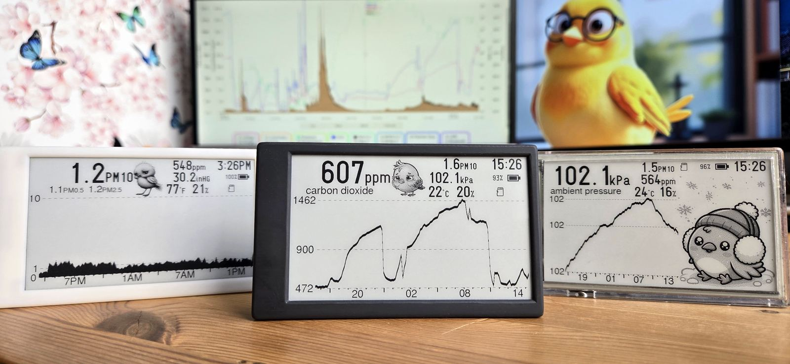
- PM2.5Particulates
- PM10Coarse dust
- CO2Stale air
- UV‑B240–320 nm
- °C / °FTemperature
- %RHHumidity
- kPaPressure
The device
More than a monitor.
Most air quality gadgets give you one number and a coloured ring. Canary gives you the shape of your whole day.
An e‑paper display that never asks for your attention.
No glare, no backlight glow at 3am, no notification badge. The screen holds its last reading even between refreshes, and it stays legible in direct sunlight.
-
24 hours on screen
Every sensor plots its own history, so you see the spike and what caused it, not just the number right now.
-
Logs to a microSD card
Months of readings written locally. Pull the card, open the file. Nothing is held hostage behind an account.
-
No subscription, no cloud requirement
Canary works fully offline. If you want dashboards and remote alerts, you can run the server yourself.
-
Yours to reconfigure
Build your own screen layouts, choose which readings sit where, and schedule what the display fetches.
Seven sensors
Every reading, plotted.
Sensor modules sourced from Switzerland, Germany, Korea and Canada. Each one draws its own 24‑hour trace on the e‑paper screen.
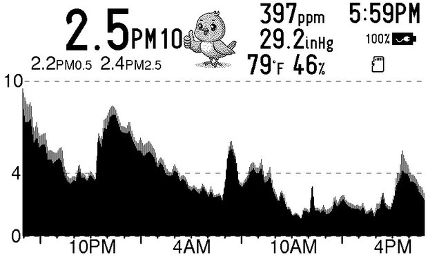
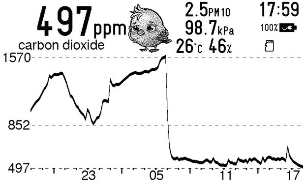
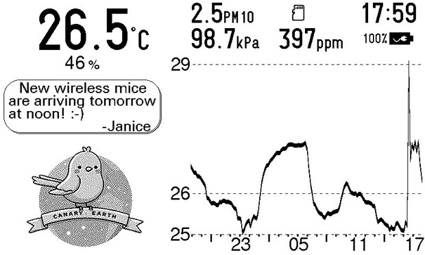
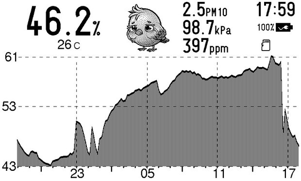
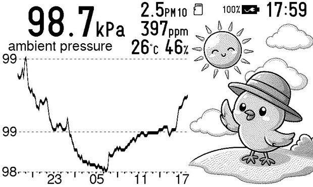
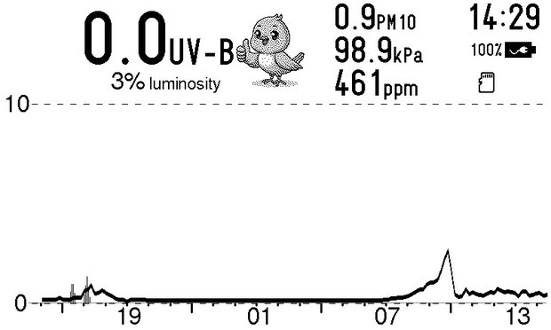
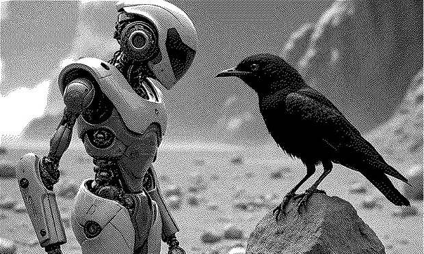
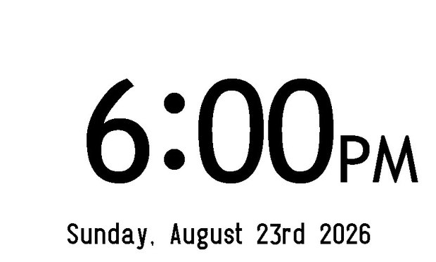
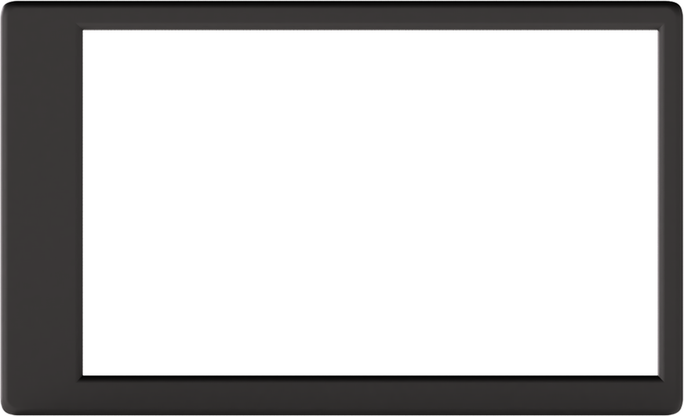
It smells smoke before you do.
A dual‑laser sensor counts particles from wildfire smoke, pollen, mold. The greys in the trace are the size bands themselves, PM1.0 through PM2.5 to PM10, so you are seeing not just how much is in the air but how big it is. That is what separates kitchen grease from road dust from smoke drifting in off a fire.
Watch a closed room go stale.
A Swiss laser‑based CO2 sensor, accurate enough to count how many people walked into a room. On this trace the line climbs all night behind a closed door and falls off a cliff the moment it opens.
The microclimate your thermostat misses.
Your hallway thermostat does not know what the nursery does at 4am, or how hot the conservatory gets by noon. The layout is yours to arrange, too; this one keeps a note from a colleague pinned beside the curve.
Too dry, too damp, and the narrow band between.
Below about 30% and skin, sinuses and wooden instruments all start to complain. Above 60% and you are inviting mould and dust mites. Canary shows which way your rooms drift over a day, and how far.
Weather you can feel coming.
A falling barometer arrives hours before the storm does, and often before the headache or the aching joint that comes with it. Canary keeps the curve, so a pattern you had only suspected becomes something you can point at.
Sunlight, measured twice.
A true UV‑B sensor reads the 240–320 nm band that actually burns skin, rather than estimating it from visible light the way most consumer sensors do. Luminosity sits on the same screen, so you can watch a room brighten and the burn risk climb side by side, and see for yourself that a bright day is not automatically a harmful one.
A picture frame when you want one.
Take a photo in the app and it lands on your own Canary. Or on one you gave to somebody else, sitting on a shelf across the country. Everything is dithered down to one bit, which is the look e‑paper does better than any backlit screen in the house.
And the rest of the time, it is a clock.
Nothing to unlock, nothing to swipe away. When you are not asking it anything, Canary is a quiet desk clock that happens to be logging every reading in the background.
In the wild
Where Canary lives.
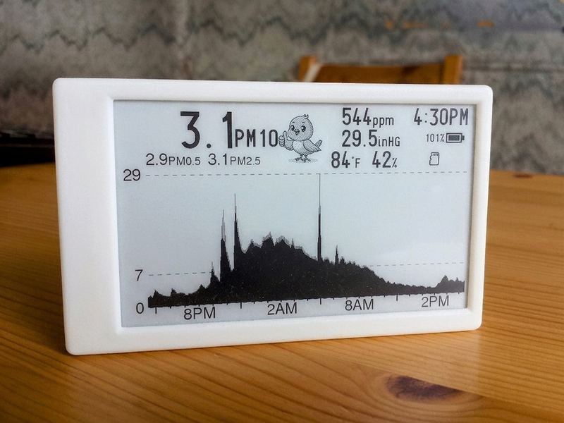
At home
The overnight hump nobody knew about.
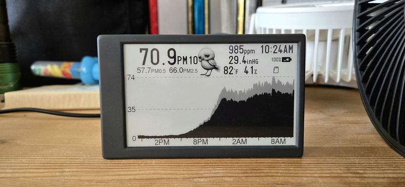
Beside the purifier
It tells you when to switch the thing on.
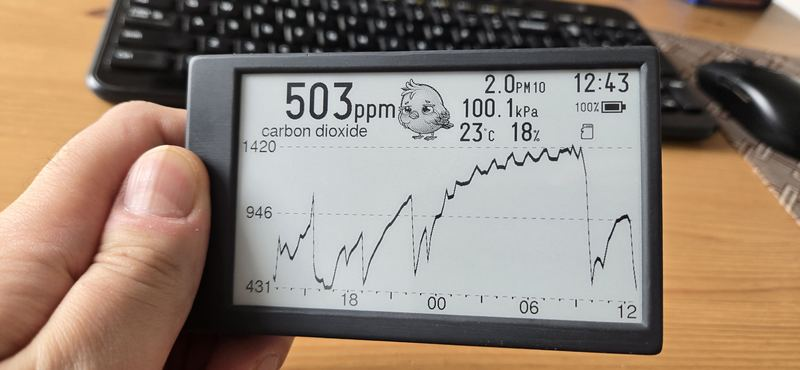
In hand
Pocketable. Readable in full sun.
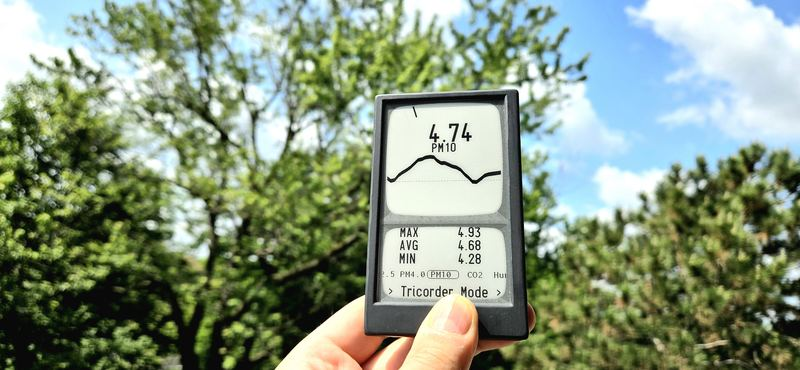
Out on a walk
Tricorder mode, held up to the sky.
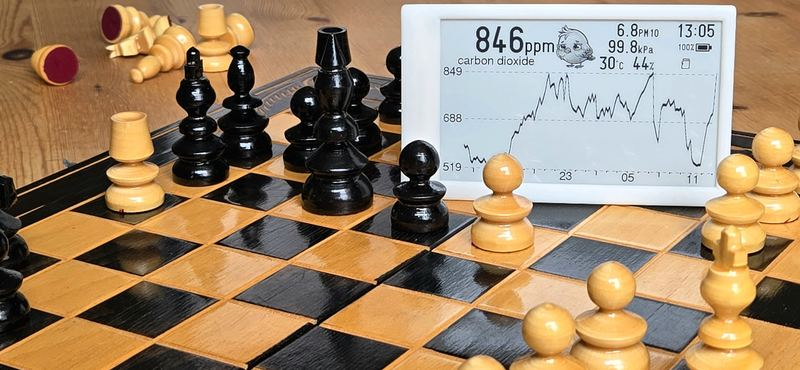
At the table
Silent. No fan, no chime, no glow.
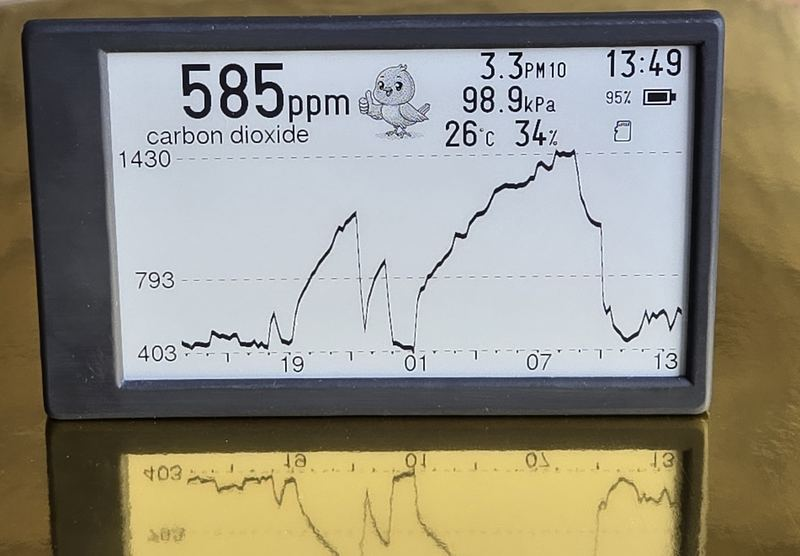
On the desk
A whole working day, at a glance.
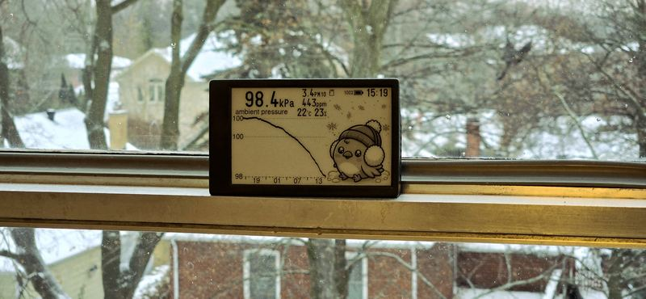
On the windowsill
Watching the pressure fall ahead of the snow.
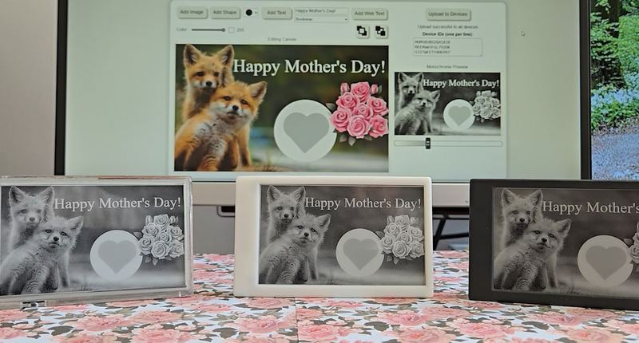
Given away
Send a picture to a Canary across the country.
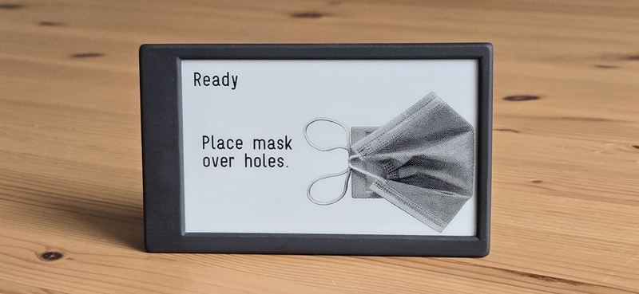
Mask test
Find out what your respirator really filters.
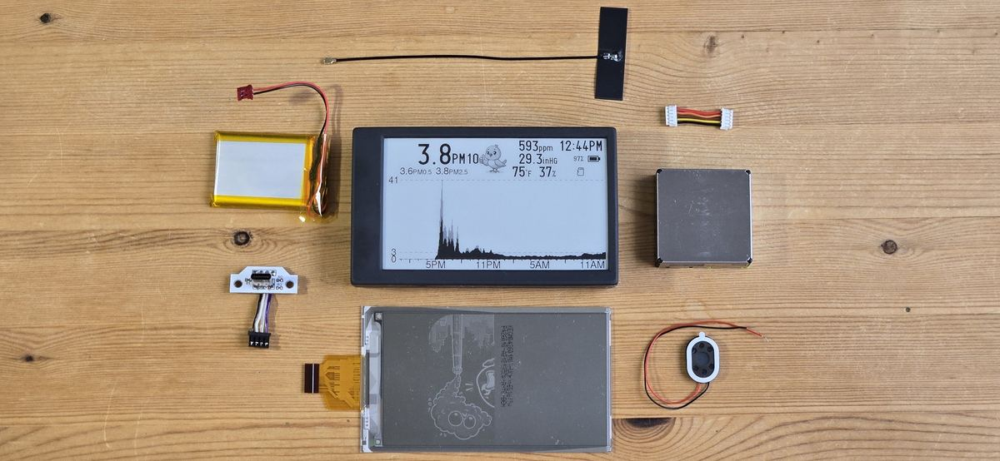
Right to repair
Built to be opened.
Every part you can see here is a part you can replace. The battery, the e‑paper panel, the sensor module, the USB‑C board: all of it comes apart with ordinary tools and goes back together again.
We would rather sell you one Canary that lasts a decade than five that do not. That is a design constraint, not a marketing line: no glue where a screw would do, no pairing locks, no parts you have to ask our permission to buy.
Specifications
The numbers.
Seven sensor modules, one e‑paper screen, and a battery that charges over the same USB‑C cable as everything else you own.
Display
- Type
- E‑paper, monochrome
- Diagonal
- 4.26″
- Resolution
- 800 × 480
- Backlight
- None
- Refresh
- 1.5 s full refresh
Power
- Battery
- 2000 mAh Li‑po
- Charging
- USB‑C
- Reported telemetry
- Voltage, charge state
- Battery life
- 21 days typical
- Charge time
- 3 h
Connectivity & storage
- Wireless
- Wi‑Fi, Bluetooth
- Mesh
- ESPNow®, Matter over Wi-Fi
- Wired
- USB‑C
- Logging
- microSD card
- Server
- Self‑hosted, optional
- Wi-Fi standard
- 2.4 GHz Wi-Fi 4 (IEEE 802.11 b/g/n)
- microSD capacity
- up to 32 GB for approx. 5,830 years of logs
- Mesh range
- 30m to 100m indoor; 400m to 1km line of sight
Physical
- Dimensions
- 110 × 67 × 18 mm
- Weight
- 118 g
- Enclosure
- Soft-touch, user-openable
- Operating range
- 0 to 50 °C
Particulates
- Mass concentration
- PM1.0 · PM2.5 · PM4.0 · PM10
- Number concentration
- PM0.5 · PM1.0 · PM2.5 · PM4.0 · PM10
- Typical particle size
- Reported
- Method
- Dual‑laser scattering
- Range
- 0 to 1000 µg/m³
- Accuracy
- ±10 %
Air & climate
- Carbon dioxide
- ppm, NDIR
- Temperature
- °C / °F
- Relative humidity
- %RH
- Barometric pressure
- kPa / inHg
- CO2 range
- 0 to 5,000 ppm
- CO2 accuracy
- ±3 %
- Temp accuracy
- ±0.8 °C
- RH accuracy
- ±6 %RH
Light
- Ultraviolet
- UV‑B, 240–320 nm
- Ambient light
- Luminosity 0 to 100%
On screen
- History
- 24 h per reading
- Layouts
- User configurable
- Units
- Metric or imperial
Sensor modules sourced from Switzerland, Germany and Korea. Every one of them is a replaceable part.
Early users
Tested in real rooms.
Founders, operators and educators who put a Canary on their desk before we had a website to put it on.
Canary is a game-changer for executive health, keeping my air clean and my focus sharp during long investment strategy sessions at the office.
As a high-growth tech operation, keeping our team's workspace healthy is critical, and Canary ensures our indoor air quality matches our high performance.
Developing global hardware partnerships requires endless travel and long boardroom hours; Canary keeps my immediate breathing space healthy wherever I land.
In our educational workshops, a healthy environment is the foundation for learning, and Canary helps us ensure our spaces promote peak cognitive focus.
Hosting community events and collaborative wellness workshops means prioritizing guest safety; Canary gives us visual assurance of clean, safe indoor air.
As a technical founder constantly working around server racks and development hardware, Canary is essential for keeping my lab environment healthy.
Canary for organizations
One room, or two hundred.
Canary units find each other over ESPNow® and form their own mesh: no site‑wide WiFi rollout, no per‑device provisioning. Readings land on a server you host, on your own network, behind your own door.
-
Mesh networking
Units relay for each other across floors and outbuildings where WiFi does not reach.
-
Privacy-first by architecture
Nothing leaves the building unless you route it there. Straightforward when the rooms are classrooms.
-
HVAC that answers to evidence
Find the meeting room that never clears, the wing the air handler forgot, the hour your filters stop coping.
-
Campus-wide smoke alerting
When wildfire smoke reaches the property line, every unit knows, and so does whoever decides about outdoor break.
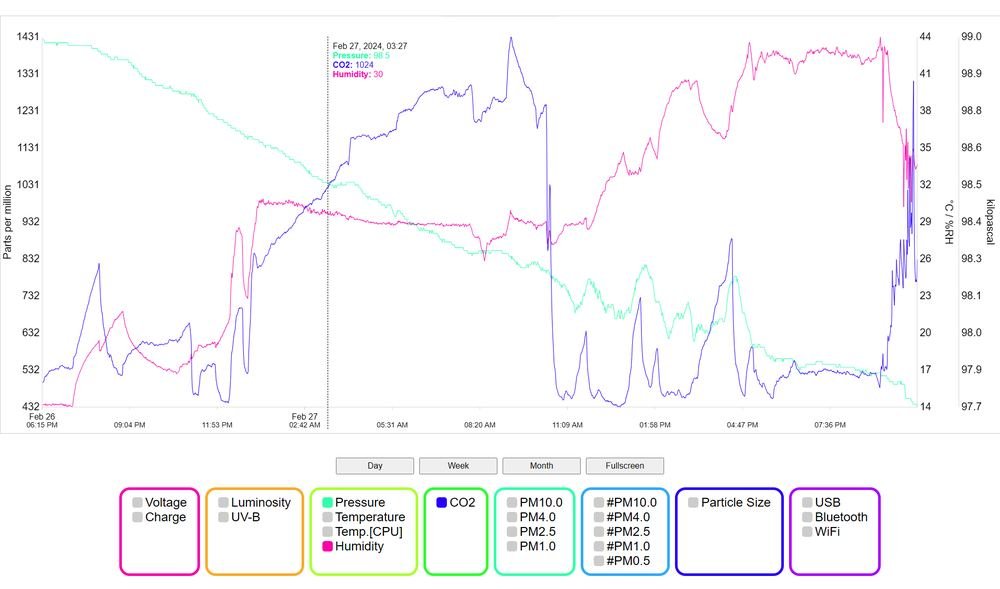
Founding batch
First units, first price.
The founding batch is small and hand-checked. Waitlist members get early-bird pricing and the first shipping slots.
- Canary monitor, soft-touch enclosure, USB‑C cable and microSD card
- All seven sensors: nothing behind a paywall or a firmware tier
- Replacement parts and schematics available from day one
- Self-hosted server software, free and unlimited
Joining the waitlist does not charge you anything and does not commit you to buying.
The waitlist
Be first in line.
Leave your email and we will tell you once: when the founding batch opens, with your early-bird price attached. That is the entire mailing list.
Before you ask
Questions, answered.
What does Canary measure?
Fine particulate matter (PM2.5, and coarser and finer fractions), carbon dioxide, UV‑B, temperature, relative humidity and ambient pressure. Particulates are the tiny airborne particles produced by wildfire smoke, traffic, wood burning and cooking, and they are one of the most important indicators of air quality.
Why does PM2.5 matter?
PM2.5 particles are roughly 30 times smaller than the width of a human hair. Because they are so small they can be inhaled deep into the lungs, and may affect everyone, especially children, older adults, and people with asthma or other respiratory conditions.
Can Canary detect wildfire smoke?
Yes. Wildfire smoke is largely made up of fine particulate matter, which is exactly what Canary is built to monitor. During wildfire season it helps you understand how much smoke is making its way indoors, so you can act when it does.
Why monitor indoor air when I can check the forecast?
Most people spend around 90% of their time indoors, and outdoor air quality reports cannot tell you what is happening inside your home. Indoor air varies enormously with ventilation, filtration, cooking, candles, fireplaces, and whether smoke is getting into the building.
Is it suitable for a nursery?
Yes, and it is one of the most common places people put one. There is no backlight and no sound by default, so it will not disturb a sleeping child while it tracks the room overnight.
Does Canary clean the air?
No. Canary measures air quality; it does not filter it. Think of it as the information that tells you when to run the purifier, open a window, or change an HVAC filter. And, just as usefully, when you do not need to.
How accurate is it?
Canary uses high-quality sensor modules built for continuous monitoring. No consumer monitor is intended to replace laboratory equipment, and we will not claim otherwise. But Canary gives reliable, consistent measurements that let you track how your air changes over time, which is what actually drives decisions.
Where should I put it?
In the room where you spend the most time: a living room, bedroom or nursery. Avoid placing it right beside a window, a vent, the stove or a humidifier, since those will skew the readings locally rather than tell you about the room.
Will cooking set it off?
It will show it, and that is the point. Frying, grilling and high-heat cooking produce a lot of PM2.5. Most people are genuinely surprised to find that making dinner can briefly push indoor particle levels past what is outside during a pollution event.
Is this only useful during wildfire season?
Plenty of people buy one because of smoke and then keep using it year-round. Indoor air shifts constantly with cooking, wood-burning stoves, seasonal allergens, renovations, and how tightly the house is shut against the weather.
Do I need to be technical to use it?
No. Out of the box you place it somewhere and read the screen. The mesh networking, self-hosted server and custom screen layouts are there if you want them, and entirely ignorable if you do not.
What happens when I join the waitlist?
We store your email address and use it once, to tell you the founding batch is open, with your early-bird price. No newsletter, no sharing with anyone else, and an unsubscribe link in the same email. Joining costs nothing and commits you to nothing.